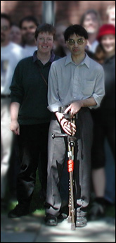

The IDRC fondly remembers Jon Kameoka
Jon Thomas Kameoka (1964 - 2002)
From Jon's Family (July 9, 2007):
Dear Jutta and ATRC Staff,
Five years have elapsed since we lost Jon in that horrific bus accident at St. George and Harbord. We all continue on a daily basis to mourn the loss of a wondeful son, great brother , co-worker , and friend to so many. Much appreciation to all of you for the heartfelt support and condolences we received. We can only hope he will be remembered for his dedication to his work , perpetuated through the computer program made possible by his memorial fund. He has missed meeting his new nephew, Marco Jon Balistreri born January 29,2007 joining other nephews, Kody Jon(9), Sean Paul(18), and nieces Amy(23) and Taylor(5). Our best wishes to all of you.
Robert and Patricia Kameoka, sisters Ann, Jane, and Julie and Families
About Jon:
- Jon's Life at the ATRC
- Jon's Work with Vision Australia
- Jon's Website
In memory of Jon:
With Jon's death the ATRC has lost a very dear friend and colleague. Jon possessed a courage, determination, caring attitude and undaunted positive outlook that I have grown to depend on. When Jon had ample potential excuses not to participate or complete a task, he refused to use any excuses. Many of us at the ATRC remember seeing Jon completely caked in snow and ice outside Robarts Library, because he was determined to make it in during even the most treacherous storms. At times when he had every right to blame others, or circumstances, he always took full responsibility. His humour and satirical wit could put any "catastrophe" into perspective. When he had many reasons to think of himself and his own needs- he always thought of others first. He never gave up- he would always keep going, undaunted by whatever obstacles or setbacks he encountered.
Many times, when we were all in awe of what he had accomplished against all odds, Jon continued to challenge himself, and expect even more of himself. With his unbounded courage he ventured to the other side of the world to, as Jon put it, "expand my horizons, for personal growth." From my point of view, Jon was someone whose "person" had grown far, far more than most people. From a personal growth perspective, he is a role model and relative giant.
Jon was the very first person I recruited to work in the newly formed ATRC in 1994. He was a large part of the core and spirit of the ATRC. That spirit he contributed will endure well beyond his time with us.
Jutta
A Poem for Jon by Duff McCourt:
Grace may fly on wings of white,
joy may ride the wind,
romance may prance on river swells,
while riding down the Seinne.
Honour may ride on horseback,
at least the soldier's kind,
but courage walks upon two canes,
and leaves them all behind.
Saint George was brave and saved the day,
or so the tale goes,
And we've all heard how courage spurred,
David with his stones,
But dragons and giants are trifling things,
to be dealt with before lunch,
when held up next to challenges that,
courage meets on a crutch.
The bravest man I know is dead,
The bravest man I knew,
And some may say that life goes on,
In some ways that is true,
But before I turn and look ahead,
I'll sit a while and think,
And remember all the things he said,
with a smile or a wink.
We miss you Jon.